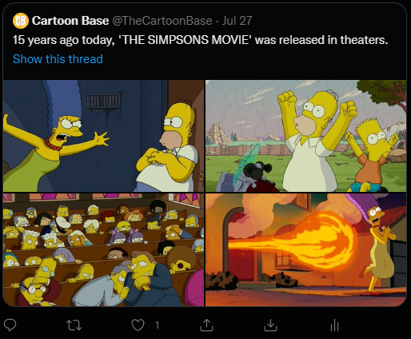

i love the simpsons movie.

I'd always rewatch this as a child... and the Simpsons in general (Channel 4, 6PM you had to be there).
I don't really see it anymore... the older episodes were much better.
What a heartbreaking plot....!!! DID THEY PREDICT MASS SURVEILLANCE!
It still has some banger jokes!